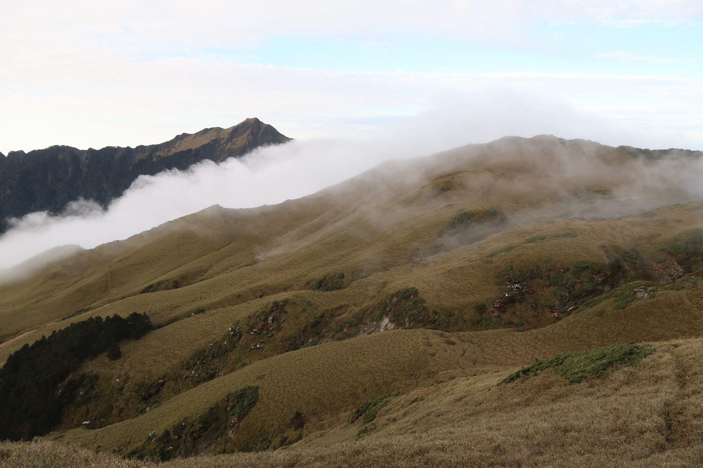
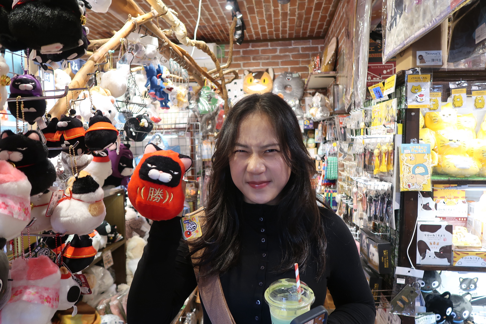

Charlotte's Journal
EN
since 2026登山 •┈┈┈┈┈୨୧┈┈┈┈┈• 書籍 •┈┈┈┈┈୨୧┈┈┈┈┈• 小小樹洞

嗨！所有點進來這個網站的人，不論你是誰。我是陳昱如，即將邁入在清大唸書的第三年，主修是外語系。也同時一個迷茫於人生和想把美好事物記錄下來的人。身為一個21歲的女生，在現在這個世界總覺得迷惘和困難，該怎麼建構自己想要的「快樂」的生活呢？該做些什麼？該學些什麼？實踐愛的過程，還有好多好多。我想，這個網站可以讓我把事情都記錄下來。

我有一隻貓咪叫做茉莉，她是最可愛同時也是最有個性的一隻貓。我喜歡旅行、爬山和閱讀，用這些方式看世界是一大幸福。

我已經登山要有兩年了，有時也會溯溪，得到了幸褔，也在於森林裡舞動中、站在溪裡石頭上時，看到了難以言喻的美。我的大學生活因為在清大山社而變得更加冒險和有趣了，因為我差勁的記憶力我發覺我需要把爬山時，或下山後的思考記錄下來